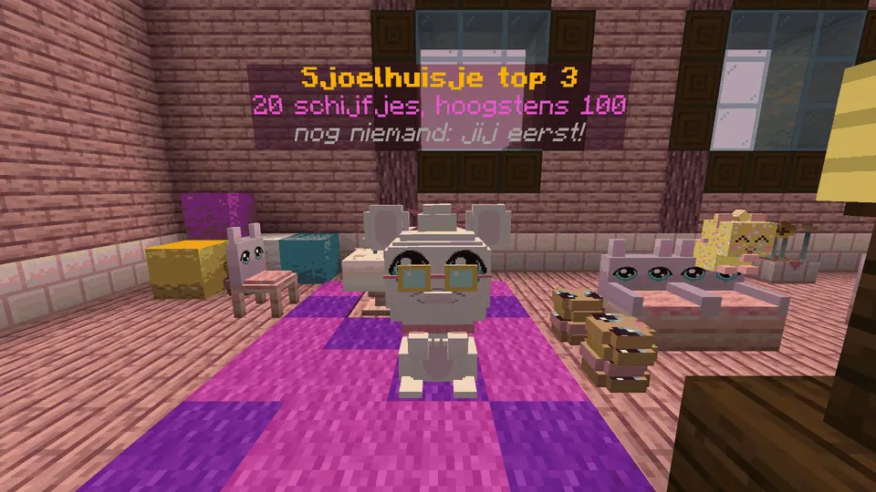
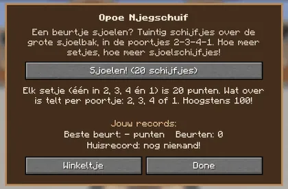

Slide twenty pucks with Opoe Njegschuif in the Sjoelhuisje.
Twintig schijfjes sjoelen bij Opoe Njegschuif in het Sjoelhuisje.

Sjoelen with OpoeSjoelen bij Opoe
- One turn is 20 pucks. Opoe lends them to you (the stack counts down).Eén beurt is 20 schijfjes. Opoe leent ze je uit (het stapeltje telt af).
- Hold right-click: a power bar goes up and down, with Opoe's two marks. Let go to shoot. Look to aim, and walk sideways to shoot from the left or right.Houd rechtsklik ingedrukt: een krachtbalk gaat op en neer, met de twee streepjes van Opoe. Laat los om te schuiven. Kijk om te mikken, en loop opzij om van links of rechts te schuiven.
- The pucks really slide: they bounce off the rims, push each other, stop short or slip through the gates 2 - 3 - 4 - 1.De schijfjes glijden echt: ze stuiten tegen de randen, duwen elkaar weg, blijven liggen of glippen door de poortjes 2 - 3 - 4 - 1.
- Counting: every complete set (one puck in each gate) is 20 points; what's left counts per gate (2, 3, 4 or 1). Five in every gate: 100, the maximum.Tellen: elk heel setje (één schijfje in elk poortje) is 20 punten; wat overblijft telt per poortje (2, 3, 4 of 1). Vijf in elk poortje: 100, het maximum.
- Sjoelschijfjes: 1 per turn, +1 per set, +1 for a new record. One player at a time; the others wait and watch.Sjoelschijfjes: 1 per beurt, +1 per setje, +1 voor een nieuw record. Eén speler tegelijk; de anderen wachten en kijken.
- No levels: sjoelen is sjoelen. The board sjoelen floats above Opoe and above the gates.Geen niveaus: sjoelen is sjoelen. Het bord sjoelen zweeft boven Opoe en boven de poortjes.

Opoe's screenHet scherm van Opoe
Play, the rules, your records and the house record, and the shop.
Spelen, de regels, je records en het huisrecord, en het winkeltje.
Prizes: clothesPrijzen: kleding
 Sjoelpetje 4 sjoelschijfjes
Sjoelpetje 4 sjoelschijfjes Sjoelvestje 10 sjoelschijfjes
Sjoelvestje 10 sjoelschijfjes Sjoelbroche 6 sjoelschijfjes
Sjoelbroche 6 sjoelschijfjes
Highscores in the GuhdexHighscores in de Guhdex
- Een beurt: 20 schijfjes